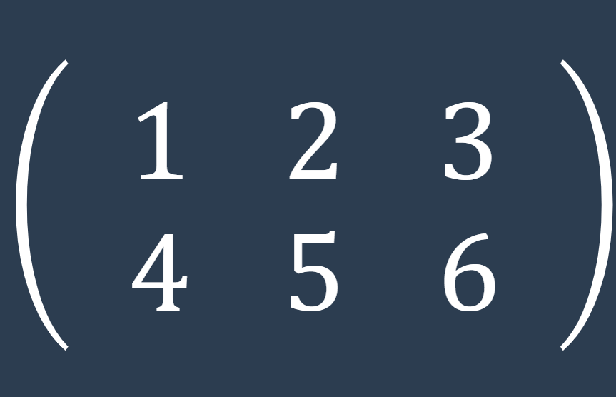
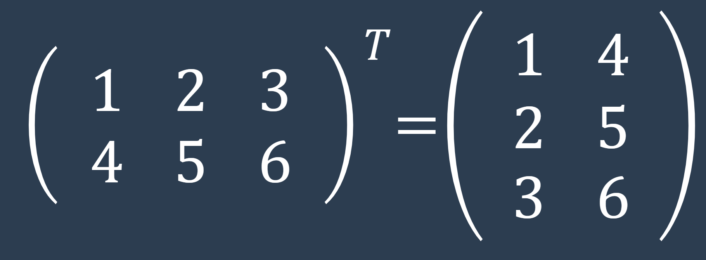

La matriz traspuesta es una operación que intercambia las filas por las columnas de una matriz.
Supongamos que tenemos la siguiente matriz:
Identificar la matriz original: En este caso, la matriz original es A.
Intercambiar filas por columnas: Para obtener la matriz traspuesta, intercambiamos las filas por columnas. Esto significa que los elementos de la primera columna de A se convertirán en la primera fila de la matriz traspuesta, los elementos de la segunda columna se convertirán en la segunda fila, y así sucesivamente.
Construir la matriz traspuesta: Creamos una nueva matriz, llamada AT (A traspuesta), colocando los elementos de A en las posiciones correspondientes siguiendo el paso 2
La matriz traspuesta tiene varios usos importantes en el ámbito del álgebra lineal. A continuación, se mencionan algunos de sus principales usos en esta área:
Cálculo de la matriz adjunta: La matriz traspuesta se utiliza en el cálculo de la matriz adjunta de una matriz. La matriz adjunta es utilizada en la inversión de matrices y en la resolución de sistemas de ecuaciones lineales.
Cálculo de la matriz inversa: La matriz traspuesta está relacionada con el cálculo de la matriz inversa de una matriz. En algunos casos especiales, la matriz inversa de una matriz se puede obtener directamente mediante la matriz traspuesta.
Diagonalización de matrices: En el proceso de diagonalización de matrices, la matriz traspuesta es utilizada para encontrar los vectores propios y los valores propios de una matriz. Estos vectores y valores propios son importantes en el estudio de las propiedades y transformaciones de las matrices.
Productos internos y espacios vectoriales: En el álgebra lineal, el producto interno es una operación importante en el análisis de espacios vectoriales. La matriz traspuesta se utiliza para definir y calcular el producto interno entre vectores.
Sistemas de ecuaciones lineales: En la resolución de sistemas de ecuaciones lineales, la matriz traspuesta se utiliza en métodos como el método de Gauss-Jordan y el método de eliminación de Gauss para encontrar soluciones.
Transformaciones lineales: La matriz traspuesta se utiliza para representar transformaciones lineales y geométricas, como rotaciones y reflexiones. Permite describir cómo los vectores se transforman en un sistema de coordenadas.